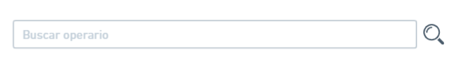
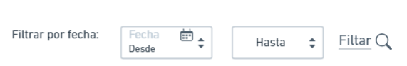
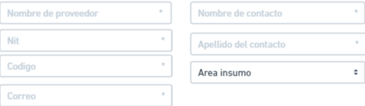

Bienvenido a Gafra: Manual de Usuario
En el corazón de la eficiencia y la organización en la industria
Manual de Usuario - Proyecto Grafa
Bienvenido al Manual de Usuario del software de inventario "Grafa". Este documento está diseñado para proporcionarte una guía completa sobre cómo utilizar eficientemente todas las funciones y características que ofrece Grafa en la gestión de inventarios.
El proyecto Grafa ha sido desarrollado con el objetivo de optimizar y simplificar el control de inventarios, brindando a los usuarios una herramienta intuitiva y poderosa para gestionar de manera efectiva los productos, seguimientos y registros asociados a la operación de su empresa.
Te invitamos a explorar este manual paso a paso, donde encontrarás instrucciones claras, consejos prácticos y ejemplos que te ayudarán a familiarizarte con todas las capacidades que Grafa tiene para ofrecer. Ya seas un nuevo usuario o estés buscando mejorar tu experiencia con el software, este manual te proporcionará los recursos necesarios para aprovechar al máximo las funciones de Grafa.
Login
El proceso de recuperación de contraseña generalmente consta de las siguientes etapas:
- Inicio - Página de Login: Los usuarios llegan a la página de inicio de sesión donde podra saber la imformacion de nosotros como empresa le presiona donde "Iniciar Sesión" .
- Pagina de Iniciar Sesión: Los usuarios entra al Login donde tendra que ingresar que colocar su correo electrónico y su contraseña paera ingresar.
- Pagina de Iniciar Sesión: Aquí, puede tambien volver a la pagina anterior con solo presionar el boton de "Conocer más".
Este proceso garantiza la seguridad al enviar un enlace único por correo electrónico y guía al usuario a través de un flujo intuitivo para restablecer su contraseña de manera segura.
Un Administrador, Todo Bajo Control
Gafra ofrece un único panel de administración que abarca todos los aspectos de tu proceso productivo. Desde el seguimiento de inventario hasta la gestión de pedidos, nuestro sistema proporciona un control total en manos de un solo administrador. Esto no solo facilita la toma de decisiones, sino que también mejora la coordinación entre los diferentes departamentos.
Explicación Administrador: La interfaz del administrador consta de cinco módulos:
- Operario: Dirige a la pestaña "Operarios".
- Inventario: Dirige a la pestaña "Reporte por Área de Inventario Producido".
- Insumos: Dirige a la pestaña "Inventario Insumos".
- Solicitudes: Dirige a la pestaña "Solicitudes".
- Proveedores: Dirige a la pestaña "Proveedores".
En la capa superior se encuentran las notificaciones de algún problema o situación. Además, hay una imagen que muestra el perfil del usuario, y debajo de él se muestra el nombre, cédula y correo del usuario. En la parte inferior izquierda, hay una opción para "Cerrar Sesión" y volver a la pantalla de inicio.
Administración de Operario
En este módulo, se presenta una lista detallada de operario registrados en la plataforma, incluyendo su identificación, nombre, correo, tipo de operario, usuario y clave.
La pestaña inicia con una barra de búsqueda que facilita la localización rápida de usuarios. Adyacente a esta barra se encuentra la foto de perfil del administrador, acompañada de sus datos correspondientes.
A continuación, se despliega una tabla que posibilita la creación de nuevos operarios. Es importante destacar que solo el administrador tiene la capacidad de editar, borrar y bloquear operario.
En la esquina inferior derecha se encuentran dos botones útiles: uno para retroceder y otro para regresar al inicio. En la esquina inferior izquierda, se ofrece la opción de "Cerrar Sesión", brindando al usuario la posibilidad de salir de manera rápida y segura.
La interfaz proporciona accesos directos a otras funciones mediante botones específicos para operarios, inventario, insumos, solicitudes y proveedores. Estos botones permiten una transición ágil entre módulos, eliminando la necesidad de regresar a la pestaña de inicio del administrador.
Esta disposición intuitiva y funcional del módulo facilita la administración eficiente de usuarios y la navegación fluida entre las diversas funciones del sistema Gafra.
Edición y Creación de Operarios
En este módulo, el administrador tiene la capacidad de crear o editar un operario. La sección inicia con una función de búsqueda, permitiendo al administrador localizar rápidamente al operario que desea editar.
Una vez seleccionado el operario, se despliegan los datos correspondientes, ofreciendo al administrador la posibilidad de realizar las ediciones necesarias. Además, se brinda la opción de ingresar los datos de un nuevo operario, generando automáticamente un nombre de usuario y una contraseña.

En esta sección, el administrador tiene la opción de guardar los cambios realizados o cancelar la operación. Asimismo, se proporcionan enlaces para volver a la página anterior o regresar al inicio, ofreciendo una navegación fluida y eficiente.

Esta interfaz intuitiva y clara facilita la gestión de operarios, permitiendo al administrador realizar fácilmente las tareas de edición y creación, con la opción de regresar a las ubicaciones deseadas en cualquier momento.
Reporte del Área Producida por el Operario
En este módulo, se realiza el reporte del área producida por el operario. La interfaz comienza con un filtro de fechas, permitiendo al usuario consultar datos desde una fecha específica hasta la fecha deseada, ofreciendo flexibilidad para seleccionar rangos temporales, ya sea por días o meses.
En la siguiente sección, se elige el área del operario que se desea visualizar, como Tubería, Ensamble, Costura o Corte.
La información se presenta en una tabla con los siguientes campos:
- Código: Proporciona un código único asignado al operario para identificación exclusiva.
- Fecha: Muestra la fecha en la que el operario subió el reporte.
- Usuario: Indica el tipo de usuario que ha presentado el informe.
- Visualizar: Ofrece un enlace directo para acceder al reporte detallado del operario seleccionado.
Además, se facilita la opción de descargar el informe directamente desde esta sección, eliminando la necesidad de ir al módulo específico de reportajes.
Para una navegación conveniente, se incluyen enlaces que permiten regresar a la página anterior o volver al inicio, brindando al usuario la libertad de elegir la dirección de su navegación según sus necesidades.
Esta mejora en la interfaz proporciona una experiencia más eficiente y centrada en el usuario al reportar y analizar las áreas producidas por el operario en un periodo específico.
Seguimiento de Inventario de Tubos
En la ventana de inventario, se lleva a cabo un seguimiento detallado de las cantidades que entran y salen, así como del stock general relacionado con todas las referencias de tubos gestionadas por la empresa.
La interfaz de usuario presenta, en la parte superior izquierda, la información y la foto del administrador para una rápida identificación. En el lado derecho, se dispone de un formulario de búsqueda que permite ingresar la información deseada. Al completar los datos y hacer clic en el ícono de búsqueda, se generan resultados filtrados de acuerdo con la solicitud del usuario.

En la mitad de la página, se encuentra un cuadro con columnas que detallan información clave, como item, tipo de producto, área, labor y cantidad total. Estos campos muestran la información específica filtrada previamente.
En la parte inferior derecha, se ubican botones funcionales, como el de descarga, que permite obtener una copia de la filtración realizada. Más abajo, se encuentran botones para regresar a la página anterior (atras) y volver al inicio.
Finalmente, esta ventana cuenta con una alerta de notificaciones, representada por un icono de campana en la parte superior derecha. Esta función permite mantener al usuario informado sobre cualquier novedad o alerta relevante en relación con el inventario y las operaciones asociadas.
Este diseño busca proporcionar una experiencia de usuario intuitiva y eficiente, facilitando la gestión y supervisión efectiva del inventario de tubos en la empresa.
Gestión de Insumos
En este módulo, la interfaz se inicia con una barra de búsqueda, destacando una fecha en la parte superior que indica el periodo actual de búsqueda. Este diseño proporciona un contexto temporal claro mientras se busca el insumo de interés. Al mismo tiempo, se ofrece un filtro adicional para seleccionar el área específica del tipo de operario que se desea visualizar.

La tabla presenta información detallada sobre los insumos, con los siguientes campos:
- Serial: Este campo representa el código único asignado a cada producto, facilitando una búsqueda más eficiente y precisa.
- Tipo de Insumo: Muestra la naturaleza del insumo, ya sea un tubo, tela o pintura, proporcionando una categorización clara.
- Referencia: Detalla las características del insumo, indicando su tamaño o cualquier otra información relevante.
- Cantidad Total: Brinda una visión general de la cantidad total del insumo disponible, permitiendo una evaluación rápida del nivel de existencias.
Asimismo, se integra una función de descarga que permite al usuario obtener un archivo con la información de manera conveniente.
Gestión de Proveedores
En este módulo, la visualización de proveedores comienza con una herramienta de búsqueda para facilitar la localización eficiente de proveedores específicos. Además, se presenta un botón que permite la creación de un nuevo proveedor, simplificando el proceso de incorporación de nuevos socios comerciales.

La tabla de proveedores exhibe la siguiente información detallada:
Al final de cada entrada en la tabla, se encuentran tres botones:
- Bloquear: Permite suspender temporalmente al proveedor, sujeto a activación por parte del administrador.
- Editar: Facilita la modificación de la información del proveedor para reflejar cambios o actualizaciones.
- Borrar: Proporciona la opción de eliminar la entrada del proveedor, útil en situaciones donde la colaboración ha concluido.
Este diseño intuitivo y detallado del módulo de proveedores ofrece una gestión eficaz y ordenada de los socios comerciales, brindando herramientas para ajustar, actualizar o desactivar colaboraciones de manera oportuna.
Creación y Edición de Proveedores
Cuando se selecciona la opción de crear un nuevo proveedor, se accede a un módulo diseñado para facilitar la introducción eficiente de información. Este proceso se inicia con una barra de búsqueda que agiliza la localización de operarios existentes para su edición.

El formulario de creación o edición de proveedores comprende los siguientes campos:
Al finalizar la inserción de datos, se presentan dos botones:
- Guardar: Este botón es responsable de almacenar los datos en la base de datos, asegurando que la información del proveedor se registre de manera efectiva.
- Cancelar: En caso de desistir del proceso, este botón permite anular la operación, asegurando que no se guarden cambios no deseados.
Este diseño del formulario de creación y edición de proveedores se enfoca en la simplicidad y eficacia, brindando una interfaz intuitiva para la gestión ágil y precisa de la información del proveedor en la base de datos del sistema.
Operarios Especializados, Suministros Garantizados
En Gafra, reconocemos la importancia de la especialización. Por ello, nuestro sistema permite asignar tareas específicas a operarios expertos en tubería, costura, corte y ensamble. Cada operario recibe sus insumos de manera eficiente y oportuna, garantizando un flujo de trabajo continuo y optimizado.